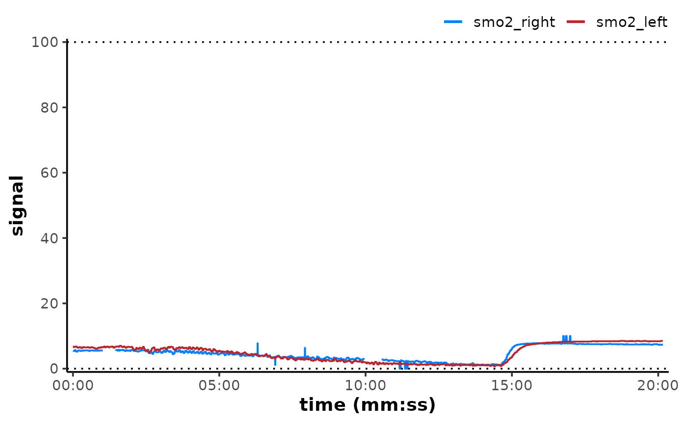

Expand or reduce the range (min and max values) of data channels to a new
amplitude/dynamic range, e.g. re-scale the range of NIRS data to c(0, 100).
Usage
rescale_mnirs(data, nirs_channels = list(NULL), range, verbose = TRUE)Arguments
- data
A data frame of class "mnirs" containing time series data and metadata.
- nirs_channels
A
list()of character vectors indicating grouping structure of mNIRS channel names to operate on (see Details). Must match column names indataexactly. Retrieved from metadata if not defined explicitly.list("A", "B", "C")Will operate on each channel independently, losing the relative scaling between channels.
list(c("A", "B", "C"))Will operate on all channels together, preserving the relative scaling between channels.
list(c("A", "B"), c("C", "D"))Will operate on channels
A&Bin one group, andC&Din another group, preserving relative scaling within, but not between groups.
- range
A numeric vector in the form
c(min, max), indicating the range of output values to which data channels will be re-scaled.- verbose
A logical to display (the default) or silence (
FALSE) warnings and information messages used for troubleshooting.
Value
A tibble of class "mnirs" with metadata
available with attributes().
Details
nirs_channels = list() can be used to group data channels (column names)
to preserve absolute or relative scaling.
Channels grouped together in a vector (e.g.
list(c("A", "B"))) will be re-scaled to a common range, and the relative scaling within that group will be preserved.Channels in separate list vectors (e.g.
list("A", "B")) will be re-scaled independently, and relative scaling between groups will be lost.A single vector of channel names (e.g.
c("A", "B")) will group channels together.Channels (columns) in
datanot explicitly defined innirs_channelswill be passed through untouched to the output data frame.
nirs_channels can be retrieved automatically from data of class
"mnirs" which has been processed with {mnirs}, if not defined
explicitly. This will default to returning all nirs_channels grouped
together, and should be defined explicitly for other grouping arrangements.
Examples
library(ggplot2)
options(mnirs.verbose = FALSE)
## read example data
data_rescaled <- read_mnirs(
file_path = example_mnirs("moxy_ramp"),
nirs_channels = c(smo2 = "SmO2 Live"),
time_channel = c(time = "hh:mm:ss")
) |>
resample_mnirs() |>
replace_mnirs(
invalid_values = c(0, 100),
outlier_cutoff = 3,
width = 10
) |>
filter_mnirs(na.rm = TRUE) |>
rescale_mnirs(
range = c(0, 100) ## rescale to a 0-100% functional exercise range
)
#> ℹ `nirs_channel` = "smo2": `smooth.spline(spar = 0.056)`
plot(data_rescaled, label_time = TRUE) +
geom_hline(yintercept = c(0, 100), linetype = "dotted")
